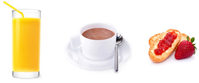
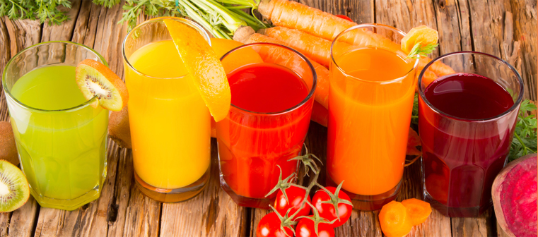

Le jus de fruits fait partie d’un petit déjeuner équilibré.
vrai
Le jus de fruits a tout à fait sa place au petit déjeuner, en complément du laitage et du produit céréalier, dans le cadre d’un petit déjeuner équilibré.
Un petit déjeuner équilibré est composé au minimum de :(1)

Exemple de petit déjeuner équilibré :
un verre de jus de fruits pour les vitamines, un bol de lait chocolaté pour le calcium et du pain beurré et confituré pour les céréales et les fibres.
- Un aliment céréalier : pain, biscottes, ou autre produit céréalier,…
- Un produit laitier : lait, yaourt, fromage ou autre produit laitier, …
- Un fruit : fruit cru, jus de fruits, compote, purée de fruit.
- Une boisson : eau, jus de fruits, ou lait pour les enfants. Les boissons peuvent aussi être du café, café décaféiné, thé, tisane, chicorée pour les adultes
Le matin, les jus de fruits sont un moyen très simple, pratique et économique de contribuer à l’apport en fruits. En effet, les jus de fruits se conservent facilement, ne nécessitent pas de préparation particulière, et ils sont 3 fois moins chers que le jus pressé maison.(2)
Les jus de fruits apportent des vitamines
vrai
Les jus de fruits contiennent des quantités importantes de vitamine C, notamment les jus de certains fruits rouges, les jus d’agrumes, les jus de fruits exotiques et les jus multi fruits. Ceux-ci en contiennent au moins 20 mg/100 mL, avec des teneurs maximales de près de 40 mg/100 mL pour le jus d’orange. Ainsi, boire un verre de jus d’orange (200 mL) revient à couvrir la quasi-totalité de son besoin quotidien en vitamine C. En conséquence, les jus de fruits sont les premiers contributeurs aux apports en vitamine C chez les enfants et adolescents en France. Un vrai atout quand on sait que la majorité des Français ne consomme pas assez de vitamine C !(3)
Ils apportent aussi de la vitamine B9 (dite aussi acide folique ou folates) présente en quantité significative dans le jus d’orange par exemple. Ainsi, boire un verre (200 ml) de jus d’orange permet de couvrir un tiers des apports quotidiens de référence en vitamine B9. Chez les enfants et adolescents, les jus de fruits sont les 3èmes contributeurs aux apports en vitamine B9.(3)
| Pour 200 mL |
Orange |
Pomme |
Multifruits |
pamplemousse |
ananas |
tomate |
| Vitamine C (mg) |
76,6*96%
|
2936%
|
38,849%
|
45
56%
|
28
35%
|
33,2*
42%
|
| Vitamine B9 (µg) |
60 30%
|
14,1 7%
|
5926%
|
27,8
14%
|
46
23%
|
2613%
|
Teneurs en vitamines C et B9 des principaux jus
Les % exprimés dans le tableau sont les % des AQR (Apports Quotidiens de Référence)
Sources : (4) et *(5)
Enfin, chaque jus de fruits dispose de ses propres particularités nutritionnelles :
- Le jus d’orange est riche en vitamine C et B9 et est un des jus apportent le plus de potassium (170mg/100mL)(4). C’est également un jus de fruits qui contient beaucoup de polyphénols (antioxydants).
- Le jus de pomme a pour particularité sa forte teneur en polyphénols.
- Le jus de pamplemousse a un profil nutritionnel proche de celui du jus d’orange : il contient beaucoup de vitamine C, de la vitamine B9, ainsi que du potassium. Il apporte également beaucoup de polyphénols.
- Le jus d’ananas contient de la vitamine C et des teneurs en polyphénols intéressantes.
- Le jus de raisin a une teneur intéressante en potassium (103mg/100mL). Il contient également des polyphénols.
- Le jus de tomate est riche en vitamine C, source de vitamine B9 et de potassium. Il contient aussi de fortes quantités de lycopène (800µg/100mL).
- Le jus multifruits permet d’associer les bienfaits de différents jus de fruits qui le composent. Il est en général riche en vitamine C et source de vitamine B9 et de potassium.
Les consommateurs de jus de fruits consomment moins de fruits et légumes
faux
Tout d’abord, La fiche de recommandation du Programme National Nutrition Santé (PNNS) « au moins 5 fruits et légumes sans effort », précise qu’un verre de jus de fruits compte pour une portion de fruits. Ainsi la consommation d’un verre de jus de fruits, au petit-déjeuner par exemple, aide à atteindre les recommandations des 5 fruits et légumes par jour du PNNS.
D’autre part, les études montrent que les consommateurs de jus de fruits consomment plus de fruits sous toutes leurs formes (frais, compotes, jus) que les non consommateurs (surtout pour les enfants), et sont donc plus nombreux à atteindre les recommandations du PNNS des 5 fruits et légumes par jour.(7)
Les jus de fruits comptent pour une portion de fruits
vrai
La fiche de recommandation du Programme National Nutrition Santé « au moins 5 fruits et légumes sans effort », précise qu’un verre de jus de fruits peut compter pour une portion de fruits. En effet, les jus de fruits étant des fruits pressés, l’essentiel des caractéristiques nutritionnelles des fruits est bien conservé dans les jus qui en sont issus.
Il n’y a pas de sucres ajoutés dans les jus de fruits
vrai
Aucun sucre n’est ajouté aux jus de fruits : tous les jus de fruits contiennent uniquement les sucres naturels des fruits. La réglementation interdit l’ajout de sucres dans les jus de fruits (directive 2012/12) dans toute l’Europe, ce qui était déjà le cas en France depuis de nombreuses années.
Seuls les nectars peuvent contenir du sucre ajouté.
Le jus de fruits, c’est simplement une boisson sucrée sans intérêt particulier !
faux
Les jus de fruits sont des fruits pressés et leurs qualités nutritionnelles sont très proches de celles des fruits. Les jus de fruits contiennent en effet de l’eau, des sucres naturels des fruits (aucun sucre n’est ajouté aux jus de fruits), mais bien plus ! Ils contiennent aussi les nutriments essentiels du/des fruits dont ils sont issus (vitamine C et B9, potassium, caroténoïdes). Par exemple boire un verre de jus d’orange (200mL) permet de couvrir la quasi-totalité du besoin quotidien en vitamine C. En France, Les jus de fruits sont les premiers contributeurs à l’apport en vitamine C chez les enfants et adolescents et le deuxième chez les adultes. Ils sont les troisièmes contributeurs à l’apport en vitamine B9 chez les enfants et adolescents. Ils représentent moins de 10% des apports en sucres simples et moins de 2% des apports énergétiques quotidiens et sont donc des contributeurs minimes à l’apport énergétique en France(3).
Cette bonne densité nutritionnelle des jus de fruits est un vrai atout et en fait une boisson avec un vrai intérêt nutritionnel. D’ailleurs le Programme National Nutrition Santé (PNNS) précise qu’un verre de jus de fruits peut compter pour une des 5 portions de fruits et légumes à consommer quotidiennement.(8) Les jus de fruits occupent donc une place légitime au sein de l’équilibre alimentaire.

Les Français consomment trop de jus de fruits !
faux
En France, la consommation des jus de fruits est tout à fait raisonnable, stable et structurée (3) :
- Chez les consommateurs, elle est de 124 mL par jour en moyenne chez les enfants, soit un peu plus d’un demi verre, de 163 mL pour les adolescents et de 117 mL par jour pour les adultes, soit toujours moins d’un verre (200 mL).
- La fréquence de consommation chez les seuls consommateurs de jus et nectars est également raisonnable quelle que soit la tranche d’âge : autour de 5 prises par semaine.
- La consommation des jus de fruits et nectars se fait essentiellement à domicile (>85%) et dans le cadre de repas structurés (majoritairement petit-déjeuner et goûter), et ne constitue donc pas un produit du grignotage.
De plus, les jus de fruits ont toute leur place dans l’équilibre alimentaire : ils apportent une quantité significative de vitamines C et B9 et contribuent modérément aux apports en sucres et énergie. Par ailleurs, d'après le PNNS, une portion de jus de fruits peut compter pour une portion de fruits et légumes et peut donc aider à atteindre le repère des 5 portions à consommer quotidiennement.
Boire du jus de fruits favorise l’apparition des carries
faux dans les conditions de consommation actuelles
Dans le contexte habituel de consommation des jus de fruits (lors des repas, et avec un temps de contact avec les dents très court), les jus de fruits ont un faible pouvoir cariogène.
Contrairement à certaines idées reçues, la quantité de sucres consommée n’est pas le seul facteur favorisant l’apparition des caries. Le pouvoir cariogène (favorisant les caries) des aliments et boissons dépend surtout des habitudes alimentaires et des conditions de leur consommation. Il est lié aux deux facteurs suivants, qui importent plus que la quantité consommée (9) :
- une fréquence importante des prises, en particulier du grignotage ;
- un temps de contact prolongé entre la dent et les sucres et une adhérence des résidus aux parois dentaires (10).
Or, lorsque nous buvons du jus de fruits, celui-ci reste très peu en contact avec les dents et ne laisse pas de résidus. De plus, les jus de fruits sont surtout consommés pendant les repas (pas dans un contexte de grignotage) et les fréquences de consommations sont modérées (2,2 prises par semaine pour les adultes et 3,4 pour les enfants). Les jus de fruits sont consommés principalement dans le cadre du petit déjeuner et du goûter, accompagné d’autres aliments qui vont temporiser le côté acide des jus de fruits comme les produits laitiers par exemple.
Sachant que les comportements sont plus importants que les caractéristiques des aliments, l’Union Française pour la Santé Bucco-Dentaire recommande surtout d’éviter le grignotage et de bien se laver les dents après les repas.